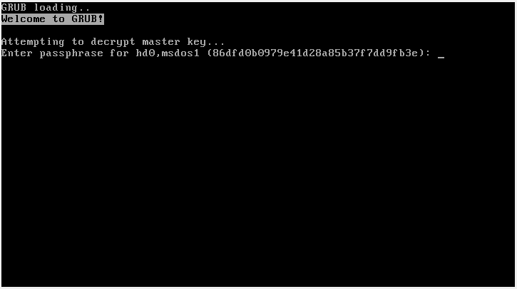
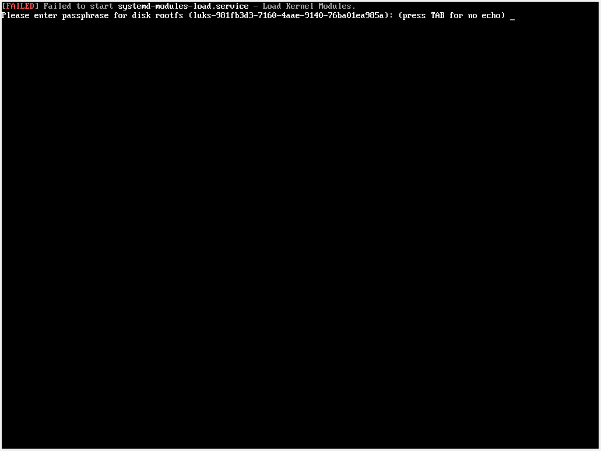
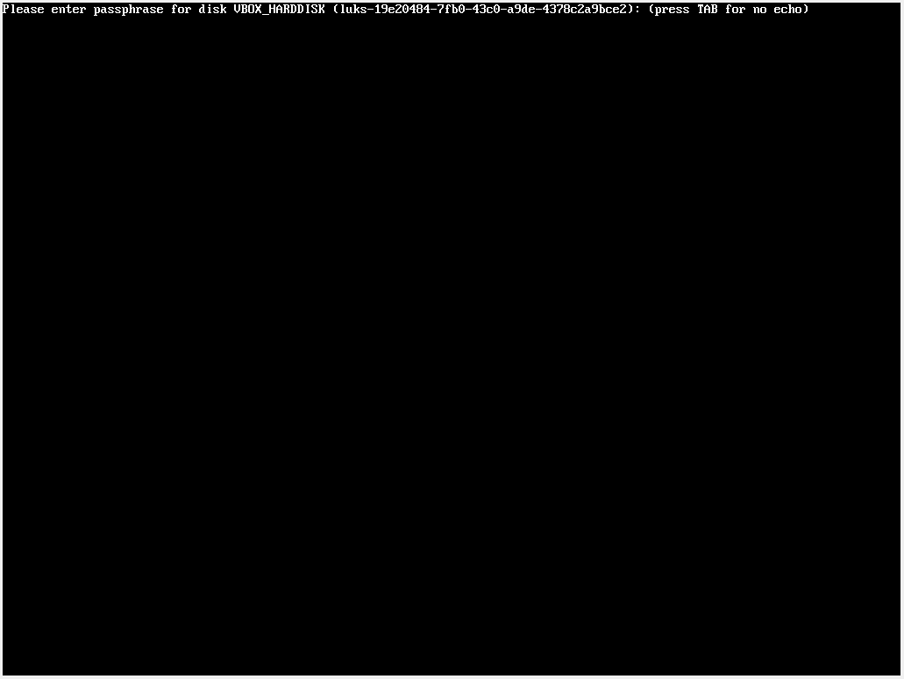
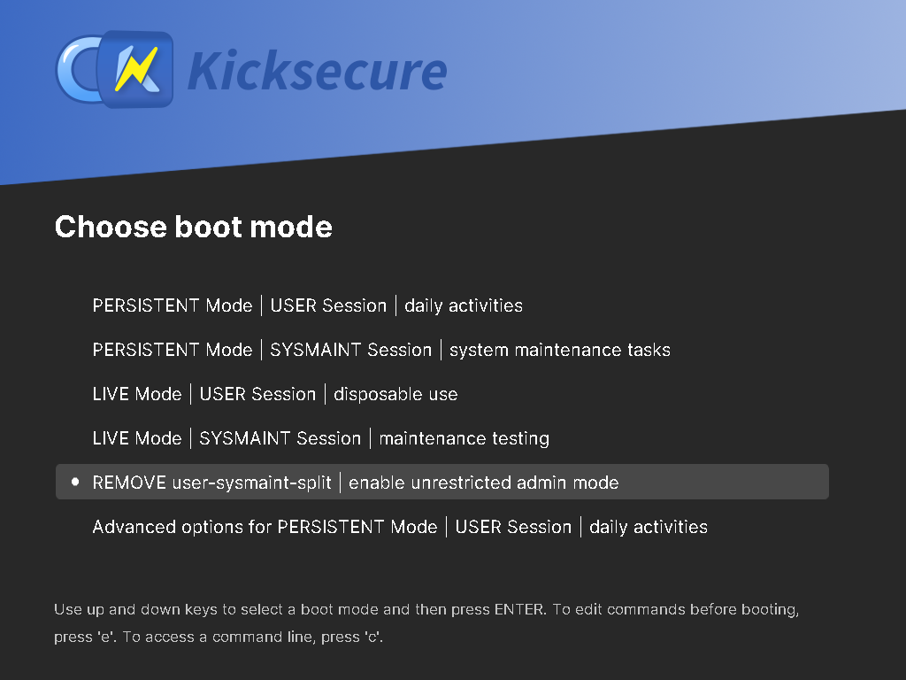

We believe security software like Kicksecure needs to remain Open Source and independent. Would you help sustain and grow the project? Learn more about our 14 year success story and maybe DONATE!
grub-liveAdvanced DocumentationdracutPrevious page: grub-liveIndex page: Advanced DocumentationNext page: dracutgrub bootloader Configuration Changes
Follow these steps to temporarily add and/or remove kernel boot parameters.

Kernel Boot Parameter Changes
Introduction
TODO: Expand introduction.
Figure: GRUB boot menu
Kernel Boot Parameters
 This is a grub, not a Kicksecure feature. Unspecific to Kicksecure. Therefore Self Support First
Policy applies.
This is a grub, not a Kicksecure feature. Unspecific to Kicksecure. Therefore Self Support First
Policy applies.
Before trying specific kernel boot parameters, it is advisable to first add them temporarily for testing or troubleshooting purposes. When the parameters have the intended effect, they can then be added permanently.
Kernel boot parameters are text strings that disable/enable certain features or change specific system behaviors. To achieve the desired change, note kernel boot parameters: [1]
- Keyword parameters: Kernel boot parameters can be simple
keywords (like "
splash" or "noapic"). - Case sensitivity: Kernel boot parameters are case-sensitive
(for example "
Noapic" would not have any effect but "noapic" would take effect). - Value parameters: Kernel boot parameters might have an
=sign to denote values (like "acpi_backlight=vendor"). - Punctuation: Kernel boot parameters might include punctuation
(like "
i8042.noloop"). - Exact matching: Kernel boot parameters have no effect unless entered exactly as advised.
- No error messages: Spelling or formatting errors, or invalid values, are silently ignored and do not result in an error message.
Temporary Kernel Boot Parameter Change
Example use cases include:
- A Enabling verbose boot messages for the purpose of debugging boot failures.
- B Booting into Recovery Mode (single user mode).
- C Testing kernel parameters temporarily before making them accessible through Permanent Configuration Changes.
- D
Setting
bdev_allow_write_mounted=1to allow Virtual Hard Disk Size Increase or Shrink Virtual Hard Disk Size. - E This list is far from exhaustive.
1 Restart the system. [2] The GRUB menu will automatically appear. [3]
2 Change the GRUB keyboard layout.
Note: Optional.
1
Scroll to Keyboard layout options.
Scroll all the way down using the
↓
key until you reach Keyboard layout options, then press
enter.
2 Select your keyboard layout.
Navigate using the arrow keys (↑ or ↓) until you find your keyboard layout, then press enter.
3 Read the notice.
Switching keyboard layouts may cause the keyboard to malfunction or
become unresponsive. If this occurs, force-reboot the machine to
fix this.
Keyboard layout `..` loaded. Press enter to continue.4 Confirm and return to the main menu.
Press enter to continue, then press ESC to go back to the main menu.
5 Done.
Keyboard layout change complete.
3 Select the relevant entry to edit.
Use the arrow keys (↑ or ↓) to highlight the relevant entry and then press the e key to enter edit mode.
4 Go to the end of the line.
Use the arrow keys to move down to the line that contains boot
arguments: [4] The line will begin with
linux.
Press the end key to move the cursor to the end of that line.
5 Add or remove kernel boot parameter changes.
- A
Removing kernel parameters:
- Optional.
- For example, removing the following kernel parameters can be very
useful for debugging:
loglevel=0quietrd.shell=0rd.emergency=halt
- And/or,
- B
Add kernel parameters: Press the
space
and carefully type in kernel boot parameter(s).
- Optional.
- For example, to enable Recovery Mode (single user mode), type: single
- Note: Replace
singlewith the actual kernel parameter.
6 Notes:
- Multiple parameters are separated with a
space. - No
spaces are added before or after any=(equals) signs or for punctuation in parameters.
7 Boot the system.
Press ctrl + X to boot the system with the new, temporary parameters.
8 Done.
The effect will only last for this boot session; once the system is restarted, they will no longer have any effect.
Permanent Configuration Changes
Follow these steps to permanently change GRUB configuration settings such as add and/or remove kernel boot parameters.
1 Learn how to configure permanent changes.
Inspect the following resources:
- Folder:
/etc/default/grub.d - File:
/etc/default/grub.d/40_kernel_hardening.cfg
2 Create a new configuration file.
Open file /etc/default/grub.d/50_user.cfg in an editor
with administrative ("root") rights.
1 Select your platform.
2 Notes.
- Sudoedit guidance: See Open File
with Root Rights for details on why using
sudoeditimproves security and how to use it. - Editor requirement: Close Featherpad (or the chosen text
editor) before running the
sudoeditcommand.
3 Open the file with root rights.
sudoedit /etc/default/grub.d/50_user.cfg
2 Notes.
- Sudoedit guidance: See Open File
with Root Rights for details on why using
sudoeditimproves security and how to use it. - Editor requirement: Close Featherpad (or the chosen text
editor) before running the
sudoeditcommand. - Template requirement: When using Kicksecure-Qubes, this must be done inside the Template.
3 Open the file with root rights.
sudoedit /etc/default/grub.d/50_user.cfg
4 Notes.
- Shut down Template: After applying this change, shut down the Template.
- Restart App Qubes: All App Qubes based on the Template need to be restarted if they were already running.
- Qubes persistence: See also Qubes Persistence
- General procedure: This is a general procedure required for Qubes and is unspecific to Kicksecure-Qubes.
2 Notes.
- Example only: This is just an example. Other tools could achieve the same goal.
- Troubleshooting and alternatives: If this example does not work for you, or if you are not using Kicksecure, please refer to Open File with Root Rights.
3 Open the file with root rights.
sudoedit /etc/default/grub.d/50_user.cfg
3 Paste the required GRUB configuration change, such as adding or removing kernel parameters.
Notes:
- Example parameter: The following example uses the kernel
parameter
nomodeset. - Replace only: Replace only
nomodesetwith the actual kernel parameters you want to add. - Keep the leading text: Do not remove the leading text
(underlined):
GRUB_CMDLINE_LINUX="$GRUB_CMDLINE_LINUXnomodeset". - Keep the trailing quote: Do not remove the trailing quote
(
"; marked in bold):GRUB_CMDLINE_LINUX="$GRUB_CMDLINE_LINUX nomodeset". - To add an option: Append it to the existing command line.
GRUB_CMDLINE_LINUX="$GRUB_CMDLINE_LINUX nomodeset"
- To remove an option: Use
str_replaceto replace it with an empty string.
GRUB_CMDLINE_LINUX="$(echo "$GRUB_CMDLINE_LINUX" | str_replace "nomodeset" "")"
4 Save.
5 Regenerate GRUB configuration.
sudo update-grub
6 Done.
The process of adding a kernel parameter is complete.
7 Verify the GRUB configuration file.
- Optional: This step is optional.
- Inspect: Inspect
/boot/grub/grub.cfgbecause it is the generated file that is actually used during the boot process.
sudoedit /boot/grub/grub.cfg
8 Reboot.
A reboot is required for changes to take effect.
reboot
9 Verify the kernel command line.
- Inspect: Inspect the virtual file
/proc/cmdline.
cat /proc/cmdline
Inspect Grub Configuration Changes
1
Put folder /boot/grub under git version control.
Git is a useful tool to record which files in a folder changed and how.
Git setup for folder /boot/grub.
Install package(s) git following these instructions:
1 Platform specific notice.
- Kicksecure: No special notice.
- Kicksecure-Qubes: In Template.
2 Update the package lists and upgrade the system.
sudo apt update && sudo apt full-upgrade
3
Install the git package(s).
Using apt command line --no-install-recommends option is in
most cases optional.
sudo apt install --no-install-recommends git
4 Platform specific notice.
- Kicksecure: No special notice.
- Kicksecure-Qubes: Shut down Template and restart App Qubes based on it as per Qubes Template Modification.
5 Done.
The procedure of installing package(s) git is
complete.
Change directory to folder /boot/grub.
cd /boot/grub
Initialize git in that folder.
sudo git init
Git needs an e-mail address. That e-mail address doesn't need to
actually exist. That e-mail address would appear in git commit change
logs if that git repository was ever pushed to any remote. If only used
locally, the default you@example.com could be kept.
Otherwise, the user may change you@example.com to any
e-mail address of their choice.
sudo git config user.email "you@example.com"
Git needs a name. That name doesn't need to actually exist. That name
would appear in git commit change logs if that git repository was ever
pushed to any remote. If only used locally, the default
Your Name could be kept. Otherwise, the user may change
Your Name to any name of their choice.
sudo git config user.name "Your Name"
Add all files in that folder to git.
sudo git add -A
Commit all files to git. [5]
sudo git commit -a -m .
2 Change grub configuration.
Make changes according to Permanent Configuration Changes.
3
See which files were modified by update-grub.
From the same folder.
git status
4 Inspect the changes.
Using command line with the default diff viewer diff can
be difficult to read, but an alternative is presented in the next
step.
git diff
5 Optional: Use a graphical diff viewer.
A graphical diff viewer can be used. Unspecific. Undocumented.
git difftool
Inspect Kernel Command Line
1 Display the kernel command line.
To view the kernel command line of the currently booted kernel, run:
cat /proc/cmdline
2 Optional: Filter for a specific parameter.
If there is too much output, use grep to filter.
Note: Replace parameter with the actual kernel
parameter you are looking for.
cat /proc/cmdline | grep --color parameter
Expected output:
parameter3 Done.
The current kernel command line has been inspected.
Goodies
- https://packages.debian.org/trixie/grub-image-boot
- https://packages.debian.org/trixie/grub-customizer
Boot with Manual Commands
TODO: document
https://forums.kicksecure.com/t/kicksecure-no-password-prompt-on-gnu-grub/483/3
Boot Related Screenshots
TODO: document
GRUB Bootloader Authentication Password Prompt
Notes:
- This is an authentication password for the GRUB bootloader, providing basic protection against unauthorized access. It is unrelated to Full Disk Encryption.
- This is for protecting GRUB menu and settings from unauthorized changes.
Refer to:
Figure: GRUB Bootloader Authentication Password Prompt

Legacy BIOS - GRUB Bootloader Disk Decryption Password Prompt
Figure: GRUB Bootloader Disk Decryption Password Prompt for (Legacy BIOS)

EFI - GRUB Bootloader Disk Decryption Password Prompt
Figure: GRUB Bootloader Disk Decryption Password Prompt (EFI)

EFI - SecureBoot - Boot Error Message
This is a known issue. No bug report is required.
Figure: EFI SecureBoot Boot Error Message

To resolve this issue, refer to Secure Boot.
Initial Ramdisk Based Encryption Password Prompt
Initial ramdisk ("initrd") based encryption password
prompts are not directly related to GRUB. They are created by the initrd
generation tool, such as initramfs-tools or
dracut. These prompts are mentioned on this page for
completeness, to avoid confusing a prompt generated by the initramfs
with a prompt generated by GRUB.
Please enter passphrase for disk ... (press TAB for no echo)
Figure: initramfs (initramfs-tools or dracut) Based Encryption Password Pre-Boot Authentication Prompt - Example (cropped)

Figure: initramfs (initramfs-tools or dracut) Based Encryption Password Prompt - Example (full)

This is related to Full Disk Encryption (FDE).
The installer currently requires that you set a disk encryption passphrase when you're on the "Partitions" screen. Whatever passphrase you set at that point, type that in and press "Enter". If you don't remember entering a passphrase, but do remember entering a password at some point, type in that password."Please enter passphrase for disk rootfs" message
Kicksecure Specific
Screenshots



/etc/default/grub.d/20_dist-base-files.cfg
File /etc/default/grub.d/20_dist-base-files.cfg
Technical information:
For advanced users only. Laymen users an skip this additional
explanation. See /etc/default/grub.d/20_dist-base-files.cfg.
See Also
Footnotes
- https://wiki.ubuntu.com/Kernel/KernelBootParameters
- Or shut it down and power it on again.
- If the menu does not appear, repeatedly press the
ESC
key until the grub menu appears. Alternatively, the
shift
key can be held down continuously for BIOS-mode (not UEFI-mode) until
the menu appears.
The system might hang when holding down the shift key. If that happens, just briefly release the shift key and hold it down again until the grub menu appears. - https://web.archive.org/web/20220312140233/https://docs.fedoraproject.org/en-US/Fedora/22/html/Multiboot_Guide/GRUB-runtime.html
- Commits all files to git with commit message
.for simplicity. Commit message could also be something else such assudo git commit -a -m "initial commit".
Categories: Documentation